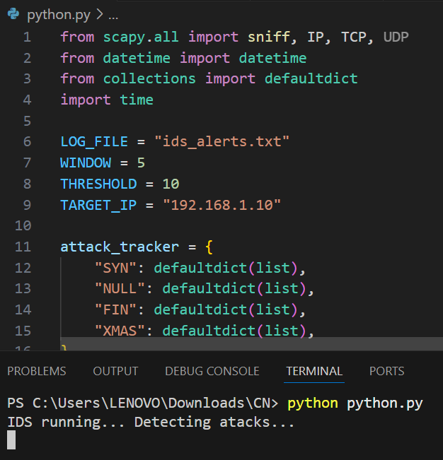
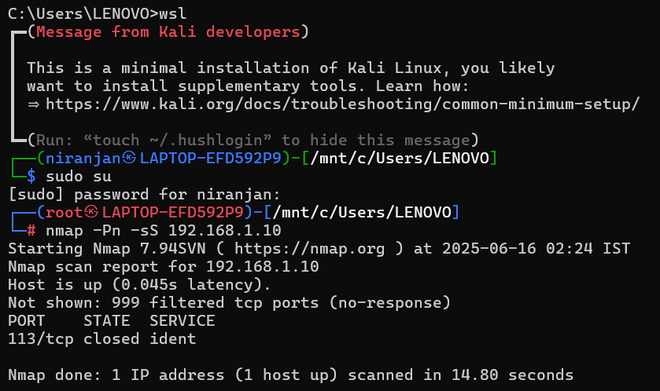
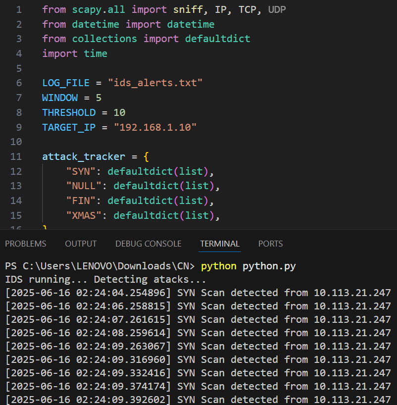

Real-Time Intrusion Detection System
Detecting Suspicious Activities with Real-Time Alerts and Packet Inspection
Get Started
Detecting Suspicious Activities with Real-Time Alerts and Packet Inspection
Get StartedAn Intrusion Detection System (IDS) is a security solution designed to monitor and analyze network or system activities for signs of malicious actions or policy violations. Its primary function is to detect potential threats such as hacking attempts, port scans, malware activity, or unauthorized access within a network. IDS works by inspecting packets flowing through the network, identifying suspicious patterns based on predefined rules or anomaly detection techniques. Once an intrusion is detected, the system generates alerts to notify administrators, allowing them to take preventive or corrective action. IDS plays a crucial role in strengthening network security by providing early warning of potential attacks.
This project focuses on implementing a network-based Intrusion Detection System (IDS) using a combination of Cisco Packet Tracer for network simulation and Python with Scapy for packet analysis. The simulated network consists of routers, switches, PCs, and a Syslog server, with one of the PCs designated as the target for monitoring potential attacks. The Python-based IDS script listens to the network traffic in real time and detects different types of scanning and flooding attacks such as SYN scan, NULL scan, FIN scan and XMAS scan. Whenever suspicious activity is detected based on traffic patterns and thresholds, the system generates alerts and stores them in a log file. This project demonstrates how custom-built IDS solutions can effectively monitor network security, providing valuable insights into intrusion detection mechanisms while helping users learn practical concepts of cybersecurity, packet analysis, and network management.
R1 → ip route 192.168.3.0 255.255.255.0 10.1.1.2 R2 → ip route 192.168.1.0 255.255.255.0 10.1.1.1 ip route 192.168.3.0 255.255.255.0 10.2.2.2 R3 → ip route 192.168.1.0 255.255.255.0 10.2.2.1
On R1, R2, and R3: conf t logging 192.168.1.100 logging trap debugging service timestamps log datetime msec exit enable terminal monitor
Real-time packet sniffing is initiated on the network interface. The IDS listens for incoming packets and monitors traffic continuously.
Different types of scans or attack simulations like SYN scan are initiated towards the target machine to test detection.
The IDS identifies suspicious patterns in the network traffic and generates alerts. These alerts are logged for analysis and displayed in the console or a file.
